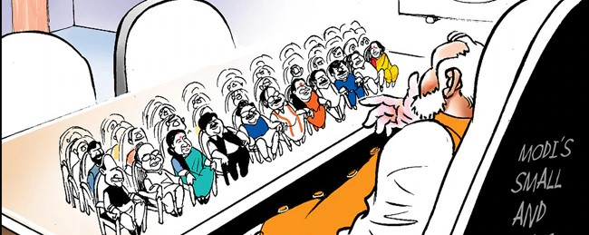

Bharatiya Janata Party (BJP) leader Narendra Modi has become India’s Prime Minister for a third consecutive
term. On June 9, Modi took the oath as Prime Minister, along with the induction of the new ministerial
council. The makeup of the Council of Ministers – 72 members, including the Prime Minister – reflects the
NDA’s delicate balancing act as Modi will be steering a coalition government. The new Union Cabinet has,
however, opted for continuity, with several portfolios allocated along the lines of the previous NDA
administration.
The National Democratic Alliance (NDA), led by Narendra Modi’s Bharatiya Janata Party (BJP), has assumed
power at the federal level of government in India after winning a third straight term in the 18th Lok Sabha
elections.

On Monday evening, June 10, Prime Minister Modi assigned portfolios to his 71 Council of Ministers. The
complete list was made public after the inaugural meeting of the new Union Cabinet, which took place at the
Prime Minister’s residence. With a few exceptions, notable major BJP leaders will retain their previous
roles under the Modi 3.0 administration. Senior BJP party leaders Amit Shah, Rajnath Singh, Nirmala
Sitharaman, and S. Jaishankar will continue to lead the four key ministries of Home, Defense, Finance, and
External Affairs, respectively.
Prime Minister Modi took the oath of office in a grand ceremony held at the presidential palace in New Delhi
on June 9. The swearing-in event drew thousands of invited attendees, including leaders from Bangladesh,
Nepal, Sri Lanka, and the Maldives, a testament to India’s ‘Neighbourhood First’ policy.
New and Old Faces in the NDA Government
The Modi Government 3.0’s new Council of Ministers includes new members and some familiar faces from the
previous cabinet. The BJP’s allies in the NDA were awarded a sizable representation of 11 portfolios. This
will be the first time the BJP has not held a complete majority in the Lok Sabha (lower house of the Indian
parliament) since 2014.
In Andhra Pradesh, where the NDA won 21 out of 25 Lok Sabha seats, two MPs each from the Telugu Desam Party
(TDP) and the BJP took the oath of office. Alongside Modi, 71 ministers took an oath on Sunday, administered
by India’s President Droupadi Murmu.
It is noteworthy that two members of the BJP, namely L. Murugan from Tamil Nadu and Ravneet Singh from
Punjab, are included in the recently announced cabinet despite their respective losses in elections.
Cabinet Ministers and Their Portfolios
Prime Minister
Narendra Modi (BJP)
- Prime Minister
- Also in charge of:
- Ministry of Personnel, Public Grievances and Pensions
- Department of Atomic Energy
- Department of Space
- All important policy issues
- All other portfolios not allocated to any Minister
Key Cabinet Ministers
- Rajnath Singh (BJP) - Minister of Defense
- Amit Shah (BJP) - Minister of Home Affairs, Minister of Cooperation
- Nitin Jairam Gadkari (BJP) - Minister of Road Transport and Highways
- Jagat Prakash Nadda (BJP) - Minister of Health and Family Welfare, Minister of Chemicals and
Fertilizers
- Shivraj Singh Chouhan (BJP) - Minister of Agriculture and Farmers Welfare, Minister of Rural
Development
- Nirmala Sitharaman (BJP) - Minister of Finance, Minister of Corporate Affairs
- Subrahmanyam Jaishankar (BJP) - Minister of External Affairs
- Manohar Lal (BJP) - Minister of Housing and Urban Affairs, Minister of Power
- H. D. Kumaraswamy (JD(S)) - Minister of Heavy Industries, Minister of Steel
- Piyush Goyal (BJP) - Minister of Commerce and Industry
- Dharmendra Pradhan (BJP) - Minister of Education
- Jitan Ram Manjhi (HAM) - Minister of Micro, Small and Medium Enterprises
- Rajiv Ranjan Singh alias Lalan Singh (JDU) - Minister of Panchayati Raj, Minister of Fisheries,
Animal Husbandry and Dairying
- Sarbananda Sonowal (BJP) - Minister of Ports, Shipping and Waterways
- Virendra Kumar (BJP) - Minister of Social Justice and Empowerment
- Kinjarapu Rammohan Naidu (TDP) - Minister of Civil Aviation
- Pralhad Joshi (BJP) - Minister of Consumer Affairs, Food and Public Distribution, Minister of New
and Renewable Energy
- Jual Oram (BJP) - Minister of Tribal Affairs
- Giriraj Singh (BJP) - Minister of Textiles
- Ashwini Vaishnaw (BJP) - Minister of Railways, Minister of Information and Broadcasting, Minister
of Electronics and Information Technology
- Jyotiraditya M. Scindia (BJP) - Minister of Communications, Minister of Development of North
Eastern Region
- Bhupender Yadav (BJP) - Minister of Environment, Forest and Climate Change
- Gajendra Singh Shekhawat (BJP) - Minister of Culture, Minister of Tourism
- Annpurna Devi (BJP) - Minister of Women and Child Development
- Kiren Rijiju (BJP) - Minister of Parliamentary Affairs, Minister of Minority Affairs
- Hardeep Singh Puri (Rajya Sabha) - Minister of Petroleum and natural gas
Natural Gas
- Mansukh Mandaviya (BJP) - Minister of Labour and Employment, Minister of Youth Affairs and Sports
- G. Kishan Reddy (BJP) - Minister of Coal, Minister of Mines
- Chirag Paswan (LJP) - Minister of Food Processing Industries
- C R Patil (BJP) - Minister of Jal Shakti
Ministers of State (Independent Charge)
- Rao Inderjit Singh (BJP) - Ministry of Statistics and Programme Implementation, Ministry of Planning, Ministry of Culture
- Dr. Jitendra Singh (BJP) - Ministry of Science and Technology, Ministry of Earth Sciences, PMO, Ministry of Personnel, Public Grievances and Pensions, Department of Atomic Energy, Department of Space
- Arjun Ram Meghwal (BJP) - Ministry of Law and Justice, Ministry of Parliamentary Affairs
- Jadhav Prataprao Ganpatrao (Shiv Sena) - Ministry of Ayush, Ministry of Health and Family Welfare
- Jayant Chaudhary (RLD) - Ministry of Skill Development and Entrepreneurship, Ministry of Education
Ministers of State
- Jitin Prasada (BJP) - Ministry of Commerce and Industry, Ministry of Electronics and Information Technology
- Shripad Yesso Naik (BJP) - Ministry of Power, Ministry of New and Renewable Energy
- Pankaj Chaudhary (BJP) - Ministry of Finance
- Krishan Pal (BJP) - Ministry of Cooperation
- Ramdas Athawale (RPI) - Ministry of Social Justice and Empowerment
- Ram Nath Thakur (JDU) - Ministry of Agriculture and Farmers Welfare
- Nityanand Rai (BJP) - Ministry of Home Affairs
- Anupriya Patel (Apna Dal) - Ministry of Health and Family Welfare, Ministry of Chemicals and Fertilizers
- V. Somanna (BJP) - Ministry of Jal Shakti, Ministry of Railways
- Chandra Sekhar Pemmasani (TDP) - Ministry of Rural Development, Ministry of Communications
- S. P. Singh Baghel (BJP) - Ministry of Fisheries, Animal Husbandry and Dairying, Ministry of Panchayati Raj
- Sobha Karandlaje (BJP) - Ministry of Micro, Small and Medium Enterprises, Ministry of Labour and Employment
- Kirtivardhan Singh (BJP) - Ministry of Environment, Forest and Climate Change, Ministry of External Affairs
- B. L. Verma (BJP) - Ministry of Consumer Affairs, Food and Public Distribution, Ministry of Social Justice and Empowerment
- Shantanu Thakur (BJP) - Ministry of Ports, Shipping and Waterways
- Suresh Gopi (BJP) - Ministry of Petroleum and Natural Gas, Ministry of Tourism
- Dr. L. Murugan (BJP) - Ministry of Information and Broadcasting, Ministry of Parliamentary Affairs
- Ajay Tamta (BJP) - Ministry of Road Transport and Highways
- Bandi Sanjay Kumar (BJP) - Ministry of Home Affairs
- Kamlesh Paswan (BJP) - Ministry of Rural Development
- Bhagirath Choudhary (BJP) - Ministry of Agriculture and Farmers Welfare
- Satish Chandra Dubey (BJP) - Ministry of Panchayati Raj
- Satish Chandra Dubey (BJP) - Minister of State in the Ministry of Coal, Minister of State in the Ministry of Mines
- Sanjay Seth (BJP) - Minister of State in the Ministry of Defense
- Ravneet Singh (BJP) - Minister of State in the Ministry of Food Processing Industries, Minister of State in the Ministry of Railways
- Durgadas Uikey (BJP) - Minister of State in the Ministry of Tribal Affairs
- Raksha Nikhil Khadse (BJP) - Minister of State in the Ministry of Youth Affairs and Sports
- Sukanta Majumdar (BJP) - Minister of State in the Ministry of Education, Minister of State in the Ministry of Development of North Eastern Region
- Savitri Thakur (BJP) - Minister of State in the Ministry of Women and Child Development
- Tokhan Sahu (BJP) - Minister of State in the Ministry of Housing and Urban Affairs
- Raj Bhushan Choudhary (BJP) - Minister of State in the Ministry of Jal Shakti
- Bhupathi Raju Srinivasa Varma (BJP) - Minister of State in the Ministry of Heavy Industries, Minister of State in the Ministry of Steel
- Harsh Malhotra (BJP) - Minister of State in the Ministry of Corporate Affairs, Minister of State in the Ministry of Road Transport and Highways
- Nimuben Jayantibhai Bambhaniya (BJP) - Minister of State in the Ministry of Consumer Affairs, Food and Public Distribution
- Murlidhar Mohol (BJP) - Minister of State in the Ministry of Cooperation, Minister of State in the Ministry of Civil Aviation
- George Kurian (BJP) - Minister of State in the Ministry of Minority Affairs, Minister of State in the Ministry of Fisheries, Animal Husbandry and Dairying
- Pabitra Margherita (BJP) - Minister of State in the Ministry of External Affairs, Minister of State in the Ministry of Textiles
"Truth Uncovered, Reality Restored."